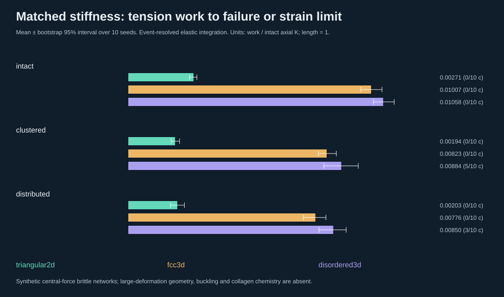
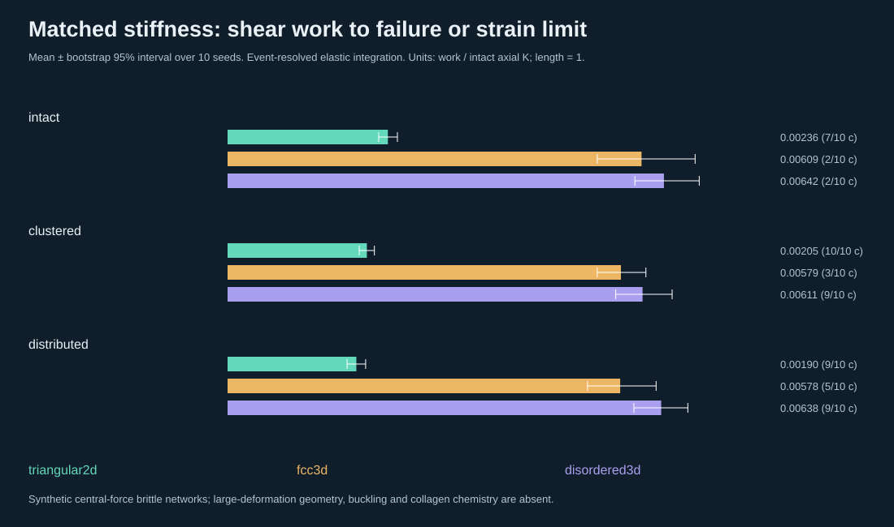
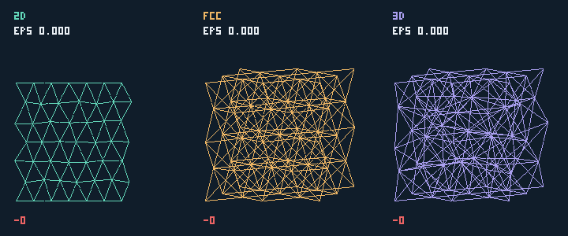
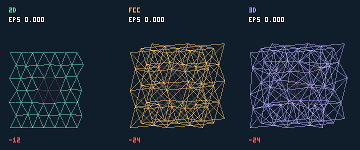
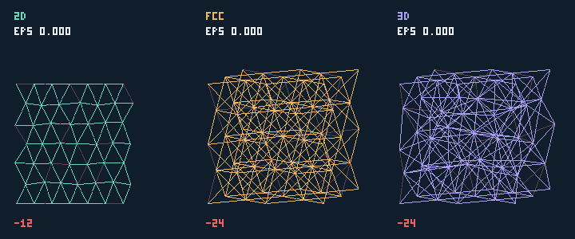
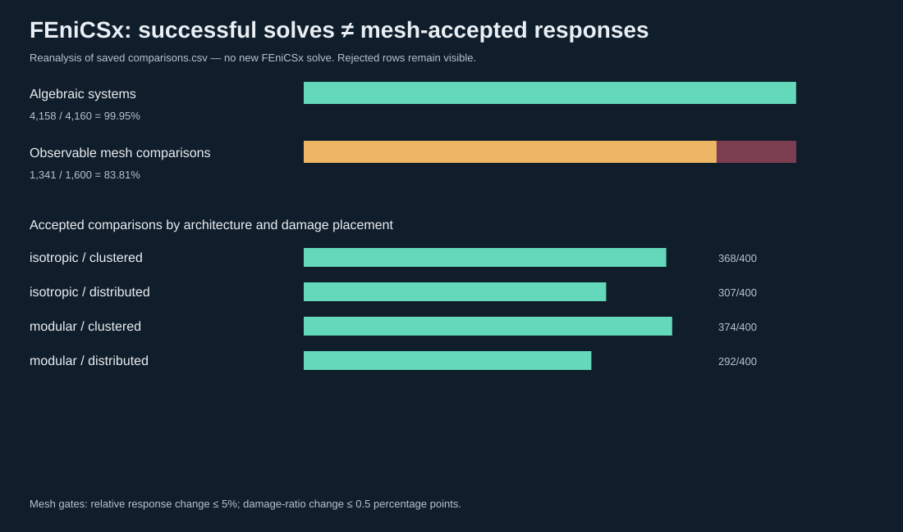

Executed central-force surrogate. No tissue calibration. Ten seeds; both equal-material and matched intact axial K. Shear held out. The disordered family has geometric disorder on an FCC graph.
Full methods/results and numerical caveats · Explore all 1,600 FEniCSx comparisons · SHA-256 manifest


Means include work to strain limit for censored cases; see counts below. Those values are not known failure work.
| Family | Loading | Damage | Work | Censored /10 |
|---|---|---|---|---|
| triangular2d | tension | intact | 0.00270548 | 0 |
| triangular2d | tension | clustered | 0.00194123 | 0 |
| triangular2d | tension | distributed | 0.00203285 | 0 |
| triangular2d | shear | intact | 0.00235930 | 7 |
| triangular2d | shear | clustered | 0.00204999 | 10 |
| triangular2d | shear | distributed | 0.00189532 | 9 |
| fcc3d | tension | intact | 0.01007491 | 0 |
| fcc3d | tension | clustered | 0.00823166 | 0 |
| fcc3d | tension | distributed | 0.00776270 | 0 |
| fcc3d | shear | intact | 0.00609203 | 2 |
| fcc3d | shear | clustered | 0.00578857 | 3 |
| fcc3d | shear | distributed | 0.00577795 | 5 |
| disordered3d | tension | intact | 0.01057650 | 0 |
| disordered3d | tension | clustered | 0.00883671 | 5 |
| disordered3d | tension | distributed | 0.00850479 | 3 |
| disordered3d | shear | intact | 0.00642161 | 2 |
| disordered3d | shear | clustered | 0.00610742 | 9 |
| disordered3d | shear | distributed | 0.00638153 | 9 |
Left: triangular 2D; middle: FCC 3D; right: geometrically disordered FCC 3D. A panel freezes at failure. Pace is illustrative, not physical time. Dark red: removed edges; label gives actual strain and removed count.



Saved-data reanalysis, not new solves. Acceptance is a numerical gate, not toughness.
